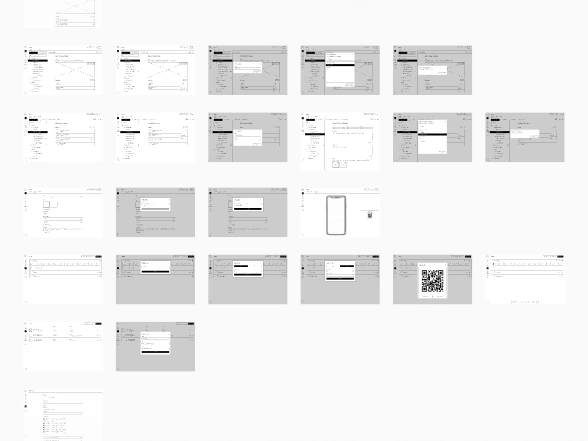
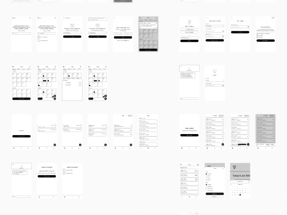

B2B · Restaurant software · QR menus
Designing WizMenu for owners and guests
WizMenu lets restaurants manage a digital menu that guests open by scanning a QR code. I designed the admin panel and reworked the guest menu, focusing on everyday editing, reviewing changes before publication, and navigation through sections and categories.

Starting point
The founder had a product idea, a competitor list and an initial guest-menu design. I joined to design the admin panel and later reworked the guest menu.
My role
I was the main designer. I worked with the founder and, at different stages, a frontend developer and QA.
First version
The first version focused on editing one menu and viewing it by QR. Table management and waiter tools were left for later.
What café owners told us
Interviews with local café owners highlighted three points:
- Menu content is maintained by the owner or administrator.
- Editing often happens on a tablet.
- One main menu covers everyday needs.
Extra menus for events stayed outside the first version. Early wireframes also explored waiter tools, which were left for a later stage.


Keep the menu structure in view
I explored separate lists and a persistent tree. The product uses a fixed Section → Category → Item hierarchy agreed with the founder. The tree sits beside the editor and is shared by editing and translation.
Save a draft, publish when it is ready
Menu editing combines text fields, image uploads and nested entries. A page-level Save button did not fit the editing flow, so I designed changes to save as a draft. Publishing became a separate action, protecting the guest menu from unfinished edits.
I proposed a preview of that draft inside the admin panel, plus a link and QR code for opening it on another device. Owners could check how their menu looked before publishing it. The same publication step also applies to availability changes such as Sold out.
Review translations beside the original
I designed a translation mode where the original and translated text sit side by side. Owners can generate a translation automatically, then inspect or edit it.
Editing and translation use the same menu tree. The mode switch sits above it, so both modes work with the same menu structure. I explored several placements for this switch in the wireframes. In the final editor, the original remains visible while the translation is edited.
Make sections visible in guest navigation
Clarity session replays showed that guests had trouble switching between sections. The old navigation put categories in a vertical list and sections in a separate switcher at the bottom; the section control was easy to miss.
I replaced it with one vertical list. Section headings and the categories inside them are visible together, with the current category highlighted. Guests can see the menu structure without first discovering a separate section switcher.
A simpler base for different brands
The initial guest-menu design used gradients and coloured shadows across the cards. I simplified the styling so a branded menu could be configured through a small set of colours and fonts while keeping the same layout.
Restaurants can choose a theme and add their information and logo. Custom colours and fonts are configured by an admin on request. This keeps the restaurant’s editor focused on menu content while still supporting a branded guest menu.
In use before a commercial launch
A few local venues use WizMenu ahead of its commercial launch. The work covers menu editing, draft preview, publication, translations and the guest menu.